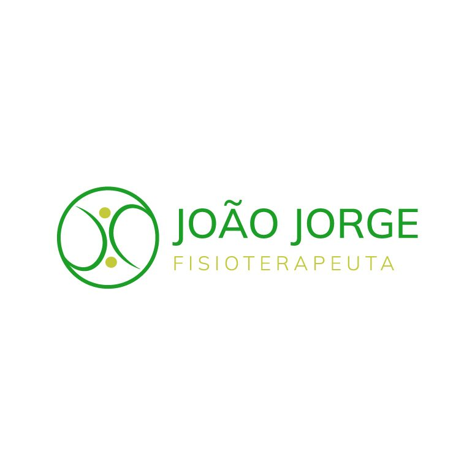
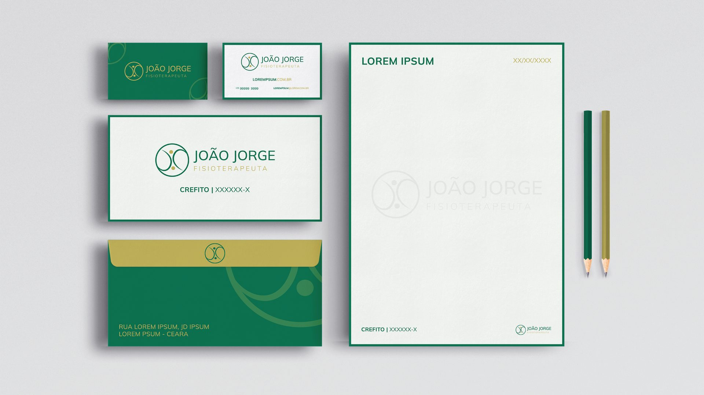
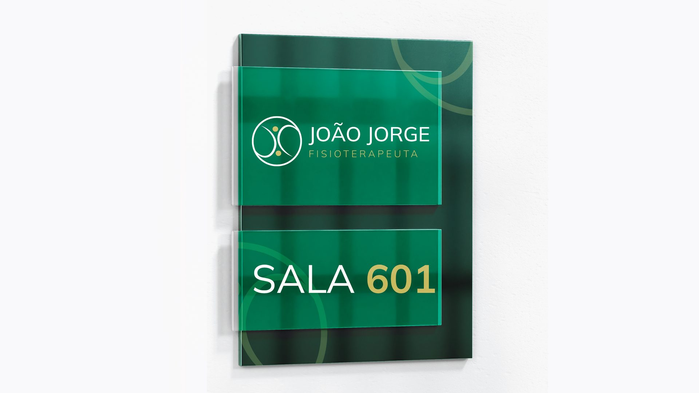
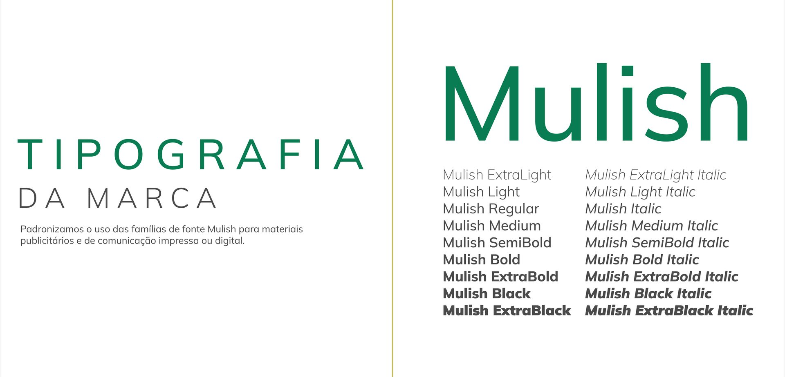

Das Iniciais ao Humano
A base do grafismo são as iniciais "JJ". A tipografia foi desconstruída para evocar a figura de uma pessoa em movimento, retirando a frieza institucional e colocando o ser humano no centro.
Uma identidade visual humanizada que funde as iniciais do profissional ao propósito da reabilitação e ao ritmo da vida.

01 / O CONCEITO
A identidade visual de João Jorge nasce da compreensão de que a fisioterapia não é sobre estar estático, mas sobre recuperar o ritmo.
O projeto gráfico funde o pessoal (as iniciais do profissional) com o propósito (a reabilitação do paciente), criando um símbolo que respira leveza, acolhimento e dinamismo.
02 / A METAMORFOSE
A construção do símbolo parte de uma solução de design inteligente e humanizada, onde a forma geométrica carrega significado profundo:
A base do grafismo são as iniciais "JJ". A tipografia foi desconstruída para evocar a figura de uma pessoa em movimento, retirando a frieza institucional e colocando o ser humano no centro.
A curvatura fluida remete à letra "J" desenhada com leveza. Visualmente, isso traduz o benefício da melhora, a recuperação da mobilidade e a qualidade de vida do paciente.
Envolvendo a figura humana, o círculo representa o fluxo contínuo do mundo e da vida, além de simbolizar o "abraço" do cuidado e a proteção oferecida no tratamento.

03 / CORES E TIPOGRAFIA
A paleta de cores foi escolhida para equilibrar a seriedade da saúde com um toque acolhedor e premium, fugindo intencionalmente do "azul clínico" padronizado do mercado.
Cores Primárias: Verde Profundo e Dourado/Areia. Enquanto o verde remete à saúde e regeneração celular, o tom dourado traz sofisticação e acolhimento humano.
Tipografia Mulish: Família tipográfica limpa, contemporânea e de alta legibilidade, conferindo clareza técnica tanto no impresso quanto nas aplicações digitais.

